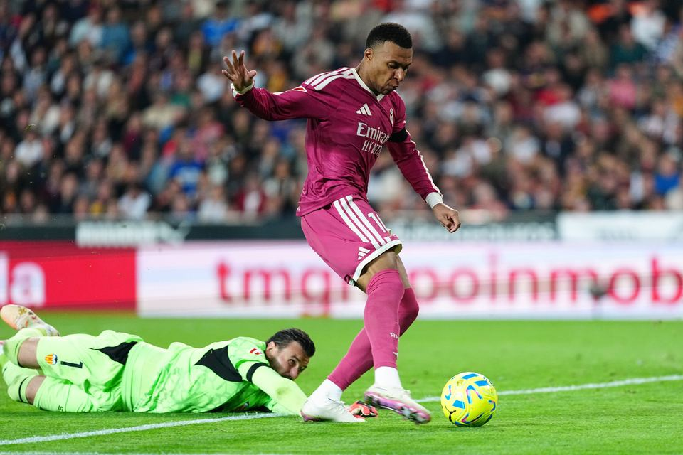

Condenado el aficionado que profirió insultos racistas a Mbappé en Oviedo de 2025

El acusado no podrá acceder a estadios que acoja partidos de futbol profesional durante dos años como parte de la pena
El acusado de proferir insultos racistas contra el jugador del Real Madrid Kylian Mbappé durante el partido disputado en el Carlos Tartiere en agosto de 2025 ha reconocido los hechos que le atribuía la Fiscalía de Asturias y ha admitido un delito contra la dignidad de las personas por motivos racistas.La Sección Segunda de la Audiencia Provincial celebró este martes una audiencia preliminar en la que el acusado asumió su responsabilidad. La condena acordada es de 11 meses de prisión, aunque la Fiscalía informó favorablemente para que no ingrese en la cárcel siempre que se le prohíba acercarse al futbolista y acceder al estadio ovetense, así como a cualquier recinto que acoja partidos de…